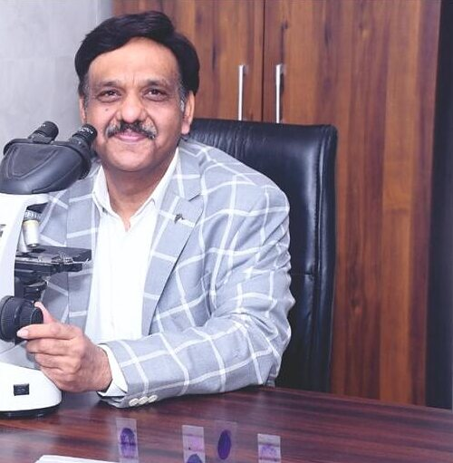

Pathology and laboratory medicine
Dr Samir Gupta
M.B.B.S., M.D. (Pathology)
Maulana Azad Medical College, New Delhi
An alumnus of Maulana Azad Medical College, New Delhi, Dr Samir Gupta has over 25 years of experience in pathology.
Read profile